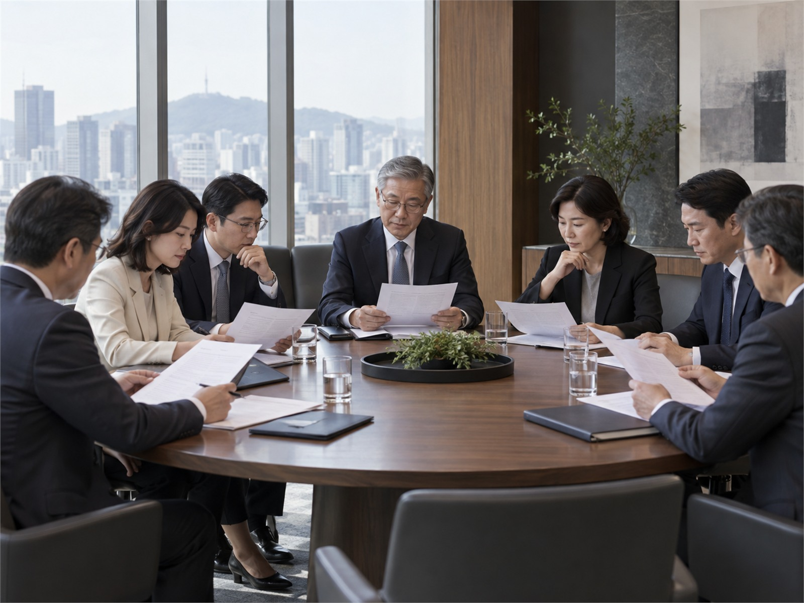
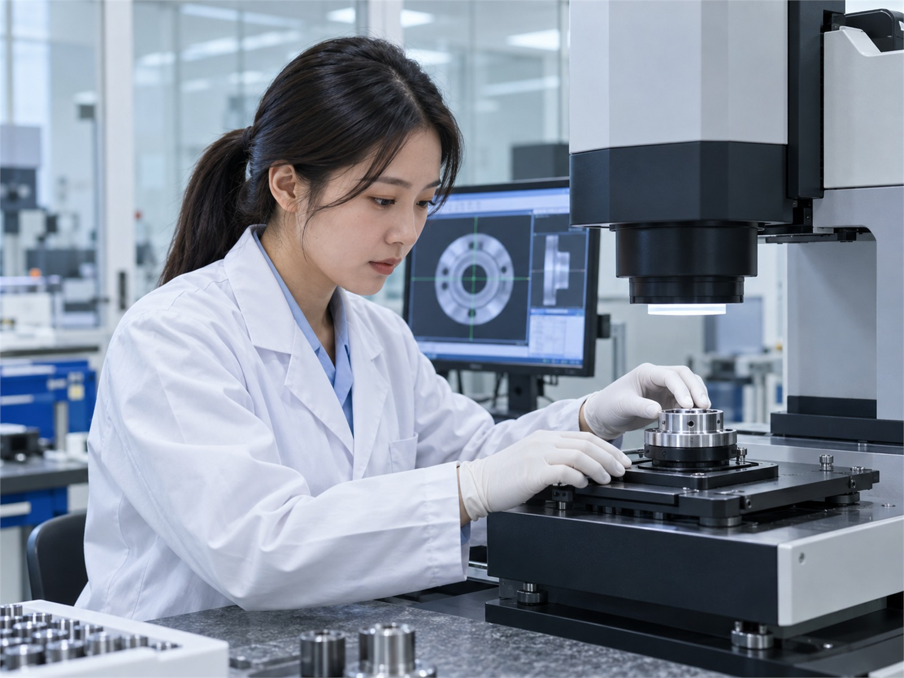

NEXORA
윤리 규범
업무에서 마주하는 주요 상황의 판단 기준과 실천 원칙을 제시합니다.
- 공정한 거래
- 이해상충 방지
- 정보 보호
모든 구성원이 같은 기준으로 판단하고 행동할 수 있도록 예방·점검·신고·개선 체계를 운영합니다.

업무에서 마주하는 주요 상황의 판단 기준과 실천 원칙을 제시합니다.

사업별 법규 리스크를 사전 점검하고 교육과 모니터링을 수행합니다.

익명성과 비밀을 보장하는 독립적인 제보·상담 채널을 운영합니다.

협력사와 동일한 윤리 기준을 공유하고 공정거래 문화를 확산합니다.

사업 활동 전반에서 인권 위험을 식별하고 취약 영역을 개선합니다.

개인정보와 핵심 기술을 보호하기 위한 관리·기술 조치를 강화합니다.